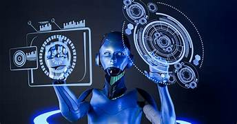

Inteligencia Artificial
La Inteligencia Artificial es una tecnología que permite a las computadoras y otros dispositivos realizar tareas que requieren capacidades similares a las humanas, como aprender, analizar información y resolver problemas.
Actualmente, la IA forma parte de nuestra vida cotidiana y está presente en herramientas que utilizamos para estudiar, trabajar, comunicarnos y entretenernos.

Video sobre Inteligencia Artificial
En el siguiente video podrás conocer de manera sencilla qué es la Inteligencia Artificial y cómo funciona.
¿Qué es la Inteligencia Artificial?
La Inteligencia Artificial (IA) es una rama de la informática que se enfoca en crear sistemas y programas capaces de realizar actividades que normalmente requieren capacidades propias de la inteligencia humana.
Estas capacidades incluyen aprender a partir de información, reconocer patrones, comprender el lenguaje, identificar imágenes, resolver problemas, generar contenido y tomar decisiones. Para lograrlo, los sistemas de IA utilizan grandes cantidades de datos y diferentes métodos de procesamiento.
A diferencia de un programa tradicional que sigue instrucciones específicas, algunos sistemas de Inteligencia Artificial pueden analizar información y encontrar patrones que les permiten mejorar sus resultados con el tiempo.
Actualmente, la IA es una de las tecnologías más importantes del desarrollo tecnológico y se encuentra presente en diferentes herramientas que utilizamos diariamente.
Ventajas de la Inteligencia Artificial
La Inteligencia Artificial ofrece diferentes beneficios cuando se utiliza correctamente. Su capacidad para procesar información y automatizar determinadas actividades permite mejorar procesos en diferentes áreas.
- Automatización: permite realizar tareas repetitivas de manera automática, reduciendo el tiempo necesario para completar determinados procesos y permitiendo que las personas se concentren en actividades que requieren mayor creatividad o razonamiento.
- Procesamiento de información: puede analizar grandes cantidades de datos en poco tiempo, ayudando a encontrar patrones y obtener información útil para diferentes propósitos.
- Productividad: puede ayudar a realizar determinadas actividades de forma más rápida y organizada, facilitando el trabajo, el estudio y otras tareas.
- Apoyo en la toma de decisiones: puede analizar información y proporcionar resultados que sirvan como apoyo para tomar decisiones más informadas.
- Innovación tecnológica: permite desarrollar nuevas herramientas y soluciones que pueden utilizarse en áreas como educación, medicina, investigación, comunicación y entretenimiento.
Importancia de la Inteligencia Artificial
La Inteligencia Artificial es importante porque representa uno de los avances tecnológicos que más está transformando la manera en que las personas realizan diferentes actividades. Su capacidad para procesar información, reconocer patrones y automatizar tareas permite desarrollar nuevas soluciones para distintos problemas.
En la actualidad, la IA tiene un papel importante en áreas como la educación, la medicina, la ciencia, las empresas, las comunicaciones y el entretenimiento. También forma parte de muchas herramientas digitales que utilizamos diariamente, aunque en ocasiones no nos demos cuenta de que utilizan Inteligencia Artificial.
Además, el crecimiento de esta tecnología está generando nuevas oportunidades de aprendizaje y trabajo. Por esta razón, es importante que los estudiantes conozcan cómo funciona, cuáles son sus beneficios y cuáles pueden ser sus limitaciones.
Al mismo tiempo, la Inteligencia Artificial debe utilizarse de manera responsable. Es necesario verificar la información que proporciona, proteger los datos personales y comprender que sus resultados deben ser revisados por las personas.
Contacto
Centro de Bachillerato Tecnológico Industrial y de Servicios No. 260
Tema: Inteligencia Artificial
Puebla, México